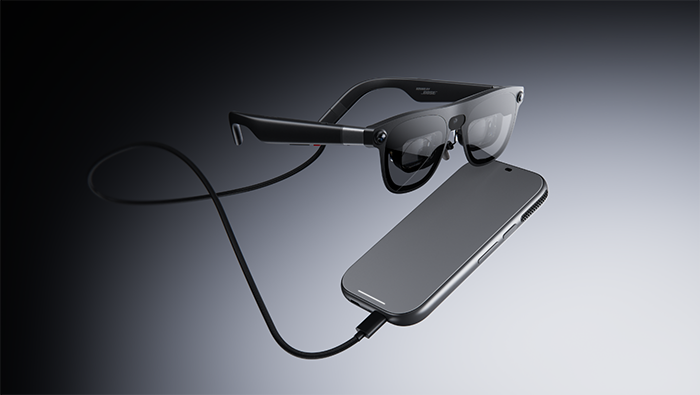

新增的是日本渠道细节
AURA的全球订购已在十月二十八日公布，Google当时也提到日本十一月二日开始订购。本次DOCOMO原文进一步明确自己的渠道：十一月二十七日在线商店销售，十二月起进入全国店铺。两份消息分别讲不同销售路径，不能合成所有日本用户十一月二日就能提货。对准备购买的人，渠道会影响咨询、选型和售后安排，但公告没有证明门店已备好试戴设备，也没有给出本次可核对的日本售价。这里收录的是地区增量，已有空间应用功能只作理解购买条件的背景。
XREAL AURA / NTT DOCOMO · XR硬件 · 日本渠道与适配公告

AURA的全球订购已在十月二十八日公布，Google当时也提到日本十一月二日开始订购。本次DOCOMO原文进一步明确自己的渠道：十一月二十七日在线商店销售，十二月起进入全国店铺。两份消息分别讲不同销售路径，不能合成所有日本用户十一月二日就能提货。对准备购买的人，渠道会影响咨询、选型和售后安排，但公告没有证明门店已备好试戴设备，也没有给出本次可核对的日本售价。这里收录的是地区增量，已有空间应用功能只作理解购买条件的背景。
DOCOMO列出十二GB加二百五十六GB、十六GB加五百一十二GB两种配置，各有M和L尺寸。尺寸按瞳距区间选择：M为六十至六十六毫米，L为六十六至七十二毫米。这些数字比单一轻量宣传更能帮助排除不合适的购买。镜体重量不包含分离的有线计算包；后者承担处理、电池与触控板功能，使用时仍要找到放口袋或桌面的方式。比较普通显示器与这套设备时，应把线材、包、可能连接的键鼠一起放进实际场景，而不是只称一下镜框。
已有功能包括在视野中摆放多个应用、用手势或计算包移动选择，以及通过语音让Gemini理解正在看的内容。Google还描述用支持视频输出的USB-C连接笔记本，把电脑画面放在Android XR应用旁边。对出差工作，这可能减少寻找额外显示器的需求；但镜像画面看得见，不等于每个桌面动作都获得相同的助手控制。现场试用应打开自己的常用文档大小，检查文字、窗口边缘和输入焦点，再完成一次真实编辑，而不是只看一段大画面视频演示。
DOCOMO脚注明确提示，功能可能随国家、地区和语言变化，部分功能还可能需要按用量订阅，示意画面也不保证每次返回相同结果。对日本消费者，最值得确认的是自己的账户、语言、常用应用和镜片需求能否组成可用工作流。应把一次性硬件、必要配件和持续服务分开核价。现有资料不足以证明门店能解决全部适配问题，也没有独立舒适度或长时间使用数据；合理的下一步是预约可确认的演示并核对退换条件，而不是把扩展销售渠道理解为这些体验问题已经解决。